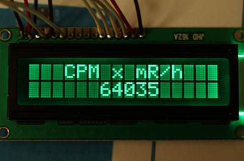

Radioattività
GEIGER COUNTER
realizzato con ARDUINO Open Source "Electronics design" di R.Chirio
Indice della pagina

Aprile 2011
Realizzazione di un sofisticato e completo Geiger Counter con funzioni di rate-meter e scaler.
Questa pagina è per lo studio e per interfaccia hardware composta da generatore HV, circuito discriminatore e generatore segnali beep.
Per visualizzazione e parte digitale, si utilizza la scheda commerciale, denominata Arduino 2009 oppure Arduino Uno, composta da scheda e display 16 x 2
vedi: http://spazioinwind.libero.it/andrea_bosi/appunti/2010/geig_enotria.htm
vedi il test del proff. Bosi: http://www.youtube.com/watch?v=VCso-0n558g
Caratteristiche:
- Alimentazione 5V consumo max 30mA (USB)
- Tensione HV fissa a 400V e 900V
- Circuito Discriminatore parametri fissi
- Cicalino audio a volume fisso
- Uscita Impulsi TTL per Arduino
- Uscita segnale audio per CDV
SCHEMA ELETTRICO versione semplificata HV fisso 400 e 900V
{kind=link}
Descrizione
Schema V. 1.1
- Alimentazione 5V, prelevabile dalla scheda Arduino oppure da 6-9V tramite un regolatore 7805, il consumo è basso, meno di 30mA, basta anche un 78L05.
- Lo stadio con U1 ha la funzione di generare la frequenza di circa 2 kHz necessaria per pilotare il circuito HV, il segnale ad onda quadra esce dal piedino 3 e va a pilotare il MosFet tipo tipo FQP2N60 o il BSP300. Migliori risultati HV con 5V alimentazione si ottengono usando un transistor per commutazione al posto del Mos-fet.
- L'alta tensione viene generata in configurazione Step-up, recuperando gli impulsi di apertura dell'induttore L1.
- Il circuito duplicatore formato da D1, D2 e D3 e da C5, C6 e C1 permette di ottenere circa 1000V a vuoto, sufficiente per le sonde americane da 900V.
- Utilizzando gruppi di diodi zener da 400mW 100V (D6 e D7) è possibile controllare con precisione la tensione in uscita bloccando il funzionamento dell'oscillatore 555, quando la tensione supera la soglia prefissata.
- Il deviatore S1 permette di selezionare la tensione in uscita da 400V a 900V, deve essere usato un deviatore a doppia sezione per garantire l'isolamento.
- Il circuito HV termina sul connettore per il Tubo geiger, adatto quindi a collegare varie sonde, si può usare un BNC da pannello collegando a massa il corpo esterno. Il tutto va realizzato con le distanze per garantire l'isolamento a 1000V.
- Attraverso il condensatore C11 è possibile prelevare il segnale impulsi e portarlo al circuito trigger.
- Il circuito trigger utilizza un integrato tipo 4093, dove la rivelazione impulsi è a carico della prima sezione, la seconda sezione inverte il segnale per avere impulsi positivi.
- La terza e quarta sezione generano l'impulso adatto al pilotaggio del buzzer e del LED che darà il lampeggio per ogni impulso generato dal tubo geiger.
- Dall'uscita della prima sezione del 4093 possiamo prelevare il segnale con impulso TTL 5V adatto a entrare sulla scheda Arduino, per effettuare il conteggio degli impulsi.
- Eventuale segnale audio è presente sempre all'uscita della prima sezione e si può collegare a ingresso audio PC per diagramma tramite programma CDV.
SCHEMA ELETTRICO versione HV regolabile
{kind=link}
- Ecco come modificare la parte HV per ottenere l'uscita variabile da 100 a circa 2000V.
- Lo schema dell'oscillatore rimane simile al precedente, viene introdotto il comparatore LM358 che dovrà essere alimentato dal 5V.
- Effettuando la regolazione con il trimmer R8 è possibile variare la tensione HV da 100V a 2000V circa, con la stabilità della stessa in quanto la lettura avviene tramite il partitore R6/R9
- Per il resto del circuito utilizzare lo schema precedente sostituendo solo la parte HV
- Si è visto in pratica che si ottengono migliori prestazioni per la conversione HV andando a 6V migliorando cioè il pilotaggio del Mos-fet, modificare il 7805 con un 7806 oppure usare un LM317 regolabile. Oppure usare un transistor per commutazione da 5-600V 1A
- Migliori risultati HV con 5V alimentazione si ottengono usando un transistor per commutazione al posto del Mos-fet.
Campioni per taratura geiger
Disponibili campioni Pechblenda sotto piombo per la taratura Geiger Counter.
Contenitori diam. 29mm, valori a richiesta da 0,100 mRh a 2 mRh, emissione tipo:
- Alpha, Beta + gamma (Minerale libero)
- Beta + Gamma (Minerale inglobato in resina)
- Solo Gamma (Minerale schermato con alluminio 1mm)
Contattare: info@chirio.com


Due esempi di campioni con Minerale libero.
Tutti i campioni vengono testati con sonde Pancake tipo Eberline HP-260 oppure Ludlum 44-9
© Roberto Chirio: all rights reserved.